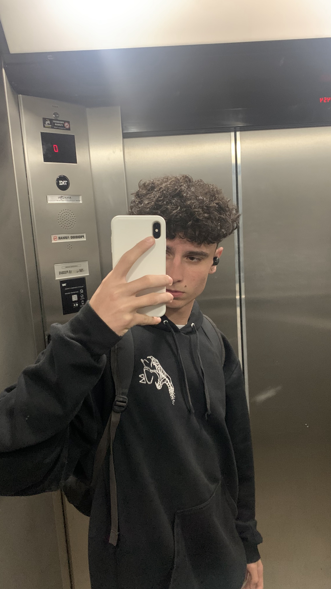

Sobre Mim
Meu nome é Leandro Moreira, tenho 17 anos, nasci em São Paulo, mas vim para Florianópolis com 4 anos de idade. Curso o ensino médio com desenvolvimento de sistemas na turma 3B, para que em um futuro próximo eu consiga entrar em uma faculdade de programação. Gosto de jogar vôlei, me considero uma pessoa muito comunicativa e não tenho problemas de timidez.